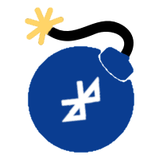

BlueBomb
Te recomendamos encarecidamente no utilizar ningún video tutorial para modificar tu consola Wii mini, pues existe un gran riesgo de que quede brickeada.
Si tienes problemas para seguir los pasos de esta guía, por favor solicita ayuda en el servidor de Discord de Wii mini Hacking. Soporte disponible solo en inglés.

BlueBomb es un exploit que aprovecha una falla en las librerías Bluetooth de la Wii y la Wii mini. Aunque es el único exploit que funciona en la Wii mini, BlueBomb también se puede ejecutar en la Wii original. Este exploit también te permite recuperar tu consola de ciertos tipos de brick, como un ‘banner brick’.
No es recomendable utilizar BlueBomb en la Wii original para instalar el Canal Homebrew y BootMii, pues existen otros exploits más fáciles de ejecutar.
Sección I - Requisitos
- Una computadora con Linux
- Una máquina virtual podría funcionar, pero no es recomendable debido a la dificultad para configurar la conexión Bluetooth. De ser posible, utiliza una Live USB como se menciona más adelante.
- También puedes usar una Raspberry Pi, pues es muy probable que ya tenga Linux instalado.
- El Subsistema de Windows para Linux no funcionará, debido a que no tiene acceso directo al adaptador Bluetooth ni los puertos USB del equipo.
- Si no tienes Linux, Ubuntu es la opción más fácil de usar y se puede ejecutar en equipos que tengan Windows o macOS.
- Si tu equipo es de 32 bits, deberás descargar Ubuntu 16.04.
- Para los equipos de 64 bits se recomienda usar la versión LTS por su estabilidad, aunque la última versión también funcionará.
- Puedes crear una Live USB de Linux y ejecutarlo sin necesidad de instalar nada en tu equipo.
- Un adaptador Bluetooth
- Puedes usar el adaptador interno de tu equipo, en caso de que cuente con uno.
- Si no tienes uno, asegúrate de conseguir uno que sea compatible con Linux.
- Una unidad USB formateada como FAT32
- Esta no puede ser la misma unidad USB que usarás para ejecutar Linux.
Sección II - Ejecutando el exploit
- Descarga el instalador HackMii del sitio web de BootMii.
- Si deseas recuperar tu consola de un brick, también deberás copiar la aplicación homebrew que deseas usar para repararla a
/apps/.
- Si deseas recuperar tu consola de un brick, también deberás copiar la aplicación homebrew que deseas usar para repararla a
- Extrae el archivo
boot.elfa la raíz de tu unidad USB.- (Por favor no copies el archivo
bootmini.elfaún si estás usando una Wii mini. Su propósito es completamente diferente y no está relacionado con esta guía. Usaboot.elfen todos los casos). 1. Conecta la unidad USB a la consola. En la Wii mini, el puerto USB se encuentra en la parte trasera. En la Wii original deberás usar el puerto inferior, o el derecho si la consola está en posición vertical. 2. Enciende la consola y ve a Opciones de Wii > Configuración de Wii. En la esquina superior derecha verás un código de cuatro caracteres como el que se muestra en la imagen de abajo. Dicho código es la versión del sistema de tu consola. Toma nota de este, pues lo necesitarás más adelante. A continuación, apaga la consola.
- (Por favor no copies el archivo
- Inicia la distribución Linux y asegúrate de estar conectado a Internet.
- Abre una Terminal.
- Ejecuta los siguientes comandos:
wget https://wii.guide/assets/files/bluebomb-helper.sh chmod +x bluebomb-helper.sh ./bluebomb-helper.sh - A continuación se descargarán los archivos necesarios y responderás algunas preguntas sobre tu consola.
- Si tu consola es una Wii mini, se te pedirá que indiques la región. Esta se determina mediante la letra al final de la versión del sistema:
Upara USA (América) yEpara PAL (Europa). - Si has seleccionado una Wii original, deberás indicar la versión del sistema.
- Si tu consola es una Wii mini, se te pedirá que indiques la región. Esta se determina mediante la letra al final de la versión del sistema:
- Enciende la consola y ** no ** conectes ningún Wii Remote.
- Presiona el botón SYNC de la consola repetidamente hasta que la Terminal muestre el mensaje
got connection handle. En la Wii mini, este se ubica en el lado izquierdo de la consola, mientras que en la Wii original, enseguida de la ranura para tarjetas SD. Esto podría requerir múltiples intentos, por favor sé paciente.
Asegúrate de que la consola se encuentre cerca de tu computadora al momento de ejecutar el exploit, preferiblemente a una distancia no mayor a un metro.
A continuación, la consola debería de iniciar el instalador HackMii. Si todo ha salido bien, ahora puedes apagar tu computadora, si así lo deseas.
Si tu consola es una Wii mini, haz clic aquí para pasar a la instalación del Canal Homebrew.